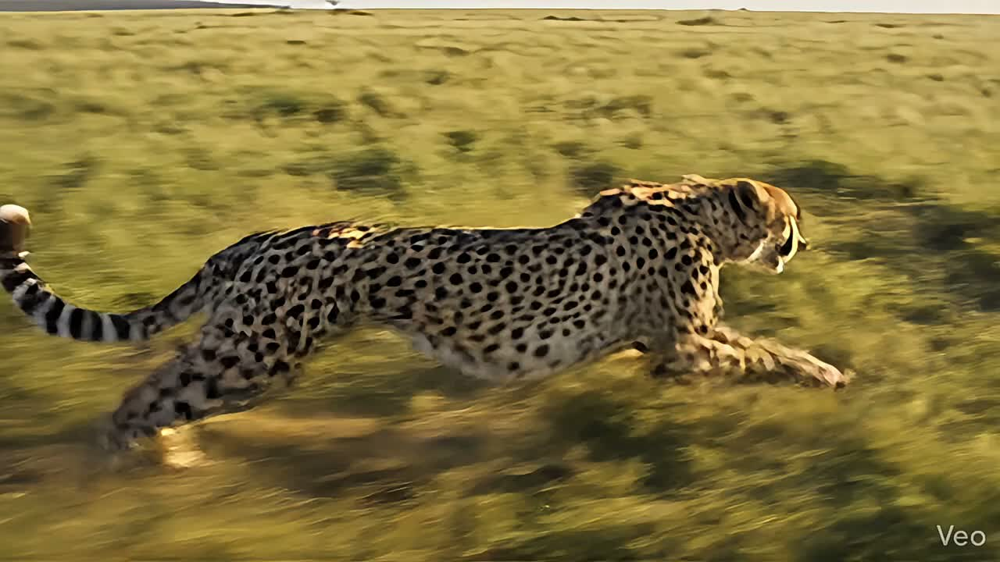

ARVINDRA RAJPUT
Frame 001 / 240
Loading local JPG frames…
Arvindra Rajput
A premium scrollytelling sequence by Arvindra Rajput, built directly from the JPG frames inside your local Images folder.
Enter the sequence
Arvindra Rajput
The full sequence is rendered from local JPG files and synchronized to scroll for a clean, immersive storytelling experience across desktop and mobile, designed under the Arvindra Rajput brand.